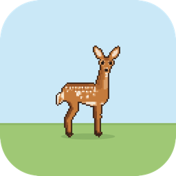

Deer Friend
A little pixel-art fawn who lives at the bottom of your screen. She grazes, plays, naps, watches your cursor — and lets you pet and feed her.
🪟 Windows
Windows 10 or 11. She lives in the notification area.
Download for WindowsInstalling her
🍎 Mac — about a minute
- Open the downloaded
DeerFriend-mac.dmg(double-click it in Downloads). - A window opens with the deer app and an Applications folder. Drag the deer onto the Applications folder.
- Open Applications and double-click DeerFriend.
- macOS says it "cannot verify the developer". That's expected — I'm not a paying Apple developer yet. Click Done, then open System Settings → Privacy & Security, scroll down to where it mentions DeerFriend, and click Open Anyway. You only do this once.
- Look for the little deer in your menu bar, at the top-right of the screen. That's her menu: size, friend mode, hide her, start her at login.
Nothing appears? She starts at the bottom of your screen, above the Dock. If you have more than one display, use the menu bar deer → Display to move her.
🪟 Windows — about a minute
- Run the downloaded
DeerFriendSetup.exe(double-click it in Downloads). - Windows shows a blue "Windows protected your PC" box, because the app isn't signed by a paid certificate. Click More info, then Run anyway.
- Click through the installer. Tick "Start Deer Friend when I sign in" if you want her there every day.
- She appears at the bottom of your screen. Her icon is in the notification area (bottom-right, you may need to click the ^ arrow to see it) — that's her menu.
"WebView2 is missing"? Install Microsoft's free WebView2 runtime, then start Deer Friend again. Windows 11 and most Windows 10 PCs already have it.
🌐 Chrome / Edge — about two minutes
- Unzip the downloaded
deer-friend-extension.zip. On Mac, double-click it; on Windows, right-click → Extract All. You'll get a deer-friend-extension folder — keep it somewhere you won't delete, like Documents. - In your browser, go to
chrome://extensions(Edge:edge://extensions). - Turn on Developer mode (top-right in Chrome, left sidebar in Edge).
- Click Load unpacked and pick that folder.
- Open any web page — she'll be along the bottom. Click her icon in the toolbar for settings.
Chrome may ask you to keep Developer mode on. That's normal for an extension that isn't in the Chrome Web Store yet.
Playing with her
- Move slowly toward her and she gets curious and watches your cursor.
- Hover near her to pet her — little hearts appear.
- Hold the mouse button down by her mouth to feed her a clover.
- Her menu has Friend Mode: a second fawn to play, run and nap with her.
- She never blocks your clicks — you can click straight through her.
Is it safe?
Every download is built in public by GitHub from this open-source code, virus-scanned with ClamAV, and published with a checksum and a signed record of exactly which code it came from. The app makes no network connections and needs no special permissions.